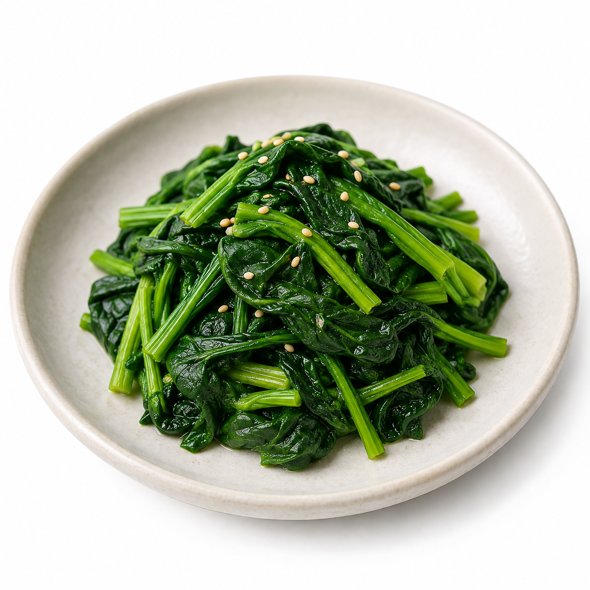
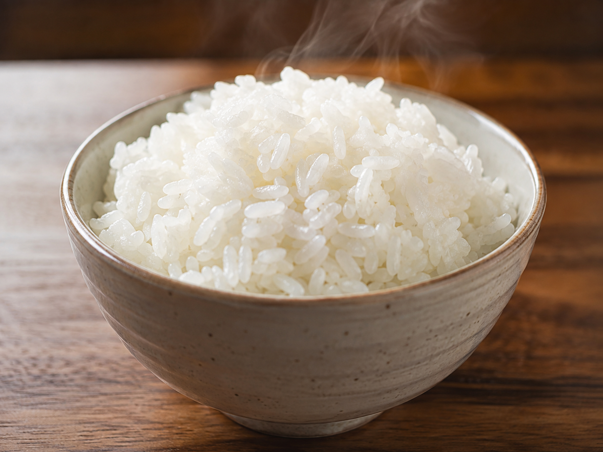

추천 사이드 메뉴
이 서비스가 사용하는 데이터와 계산 근거를 확인할 수 있어요.
현재 식사 순서
- 1
 계란말이1인분GL 기여 (상대)낮음
계란말이1인분GL 기여 (상대)낮음 - 2
 제육볶음1인분GL 기여 (상대)낮음
제육볶음1인분GL 기여 (상대)낮음 - 3된장찌개1인분GL 기여 (상대)낮음
- 4

시금치 나물1인분GL 기여 (상대)낮음 - 5

공기밥1인분GL 기여 (상대)낮음
섭취 간격: 약 5~10분

이 서비스가 사용하는 데이터와 계산 근거를 확인할 수 있어요.
계란말이1인분GL 기여 (상대)낮음제육볶음1인분GL 기여 (상대)낮음
시금치 나물1인분GL 기여 (상대)낮음
공기밥1인분GL 기여 (상대)낮음섭취 간격: 약 5~10분